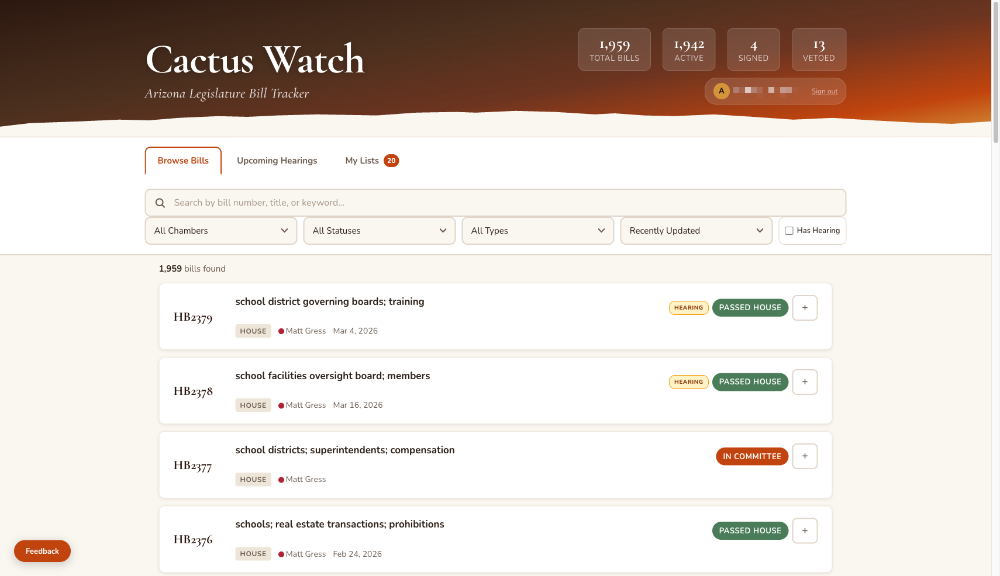
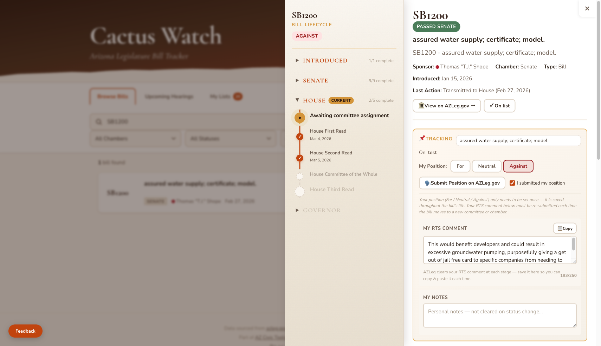
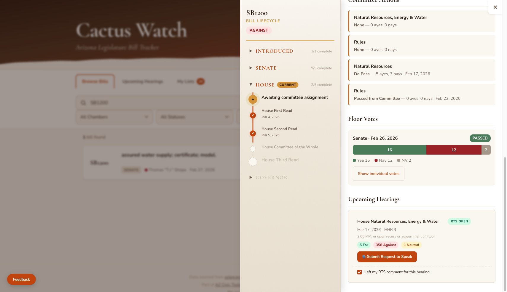
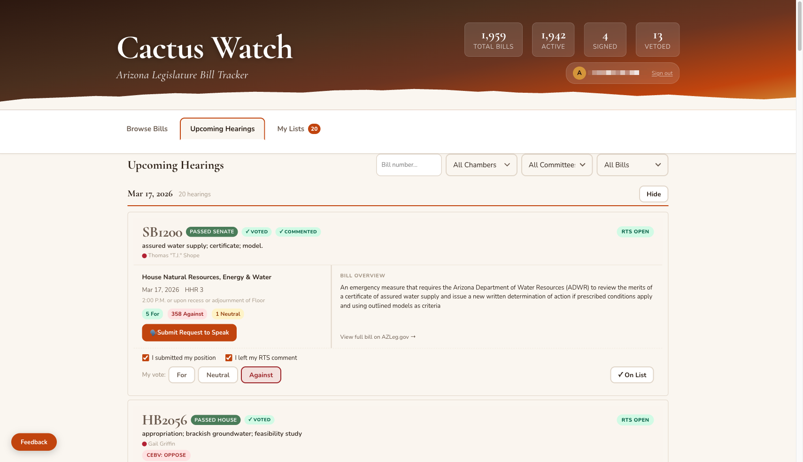
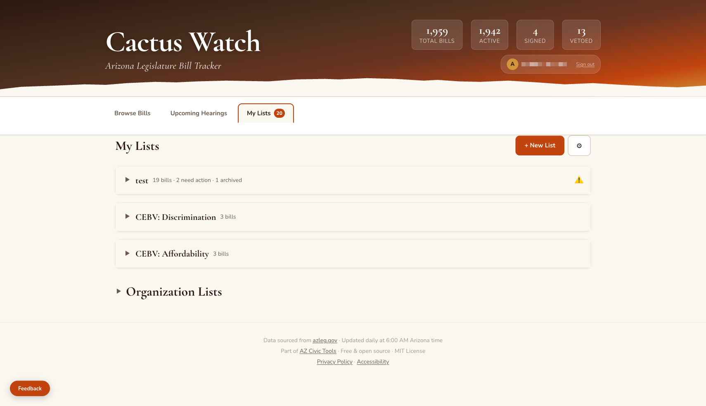
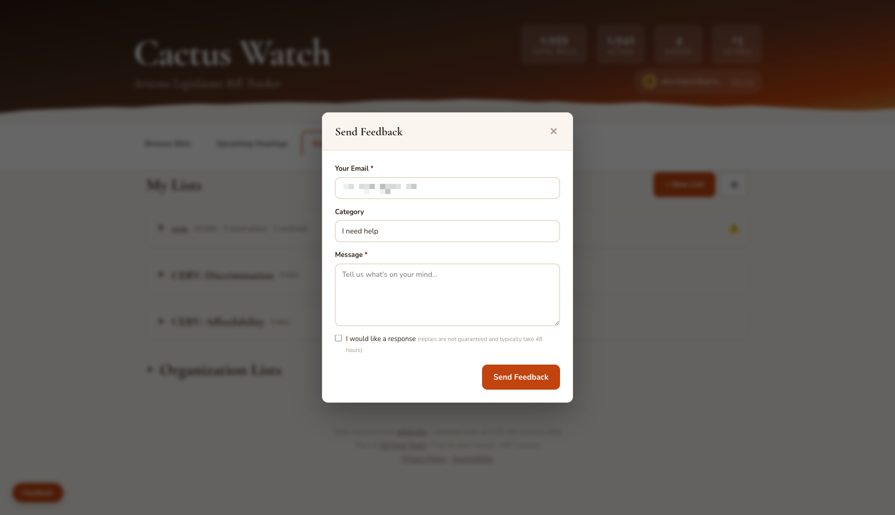

An easier way for Arizona voters to track bills and make their voices heard through the Request to Speak system
Cactus Watch is a free tool that makes it easier for Arizona residents to participate in the legislative process. It tracks every bill moving through the Arizona Legislature, updates nightly, and gives you direct access to the state's Request to Speak (RTS) system so you can voice your opinion on bills that matter to you.
The Arizona Legislature's official website can be difficult to navigate. Finding the right bill, figuring out which committee it's in, and submitting your position through RTS takes time. Cactus Watch simplifies all of that into one place.
With Cactus Watch, you can:
Cactus Watch is a companion tool, not a replacement for the official azleg.gov site. You still need an RTS account on azleg.gov to submit your positions. Cactus Watch helps you organize your work and get to the right page faster.
Visit cactus.watch to get started. No account is required to browse bills and view upcoming hearings. To track bills and save your positions, sign in with Google or a magic link sent to your email.

We understand that civic participation can feel sensitive, and we want to be upfront about what signing in means for your data.
When you create a Cactus Watch account, we collect only your email address. We don't ask for your name, phone number, home address, or any other personal information. If you sign in with Google, we receive the email associated with your Google account. If you use a magic link, we just need the email you type in.
Your email is used for one thing: logging you in. We don't send marketing emails, newsletters, or anything else. The only email you will ever receive from us is a login code if you use the magic link option.
Your bill tracking lists, positions, and RTS comments are stored securely so they sync across your devices. We don't run analytics or tracking scripts on the site. We don't use advertising. We don't sell, share, or trade your data with anyone. The code is open source, so anyone can verify this.
If you prefer not to sign in, you can still browse all bills, view upcoming hearings, and see organization advocacy positions. Signing in just adds the ability to save your personal lists and track your RTS activity.
For the full details, read our Privacy Policy.
Before you can submit positions on bills, you need a Request to Speak account on the Arizona Legislature's website.
Civic Engagement Beyond Voting (CEBV) is a grassroots Arizona 501(c)(4) that trains and empowers residents to participate in state government. They run the most accessible RTS signup in the state, offer regular trainings on how the legislature works, and publish a weekly newsletter during session that breaks down what's happening at the Capitol in plain language. If you want to understand how to actually influence your government, CEBV is the place to start.
We highly recommend using CEBV to sign up. If you would prefer the manual process, here are the steps:
The Browse Bills tab is your starting point. Every bill introduced in the current legislative session is here, updated nightly from azleg.gov.
Type a bill number (like SB1200), a keyword, or a sponsor's name in the search bar. You can also filter by:
Each bill card shows the bill number, title, sponsor (with party affiliation dot), last action date, and current status. If the bill has an upcoming hearing, you'll see an amber Hearing badge.
Click the + button on any bill card to add it to one of your tracking lists.
Click on any bill to see its full detail page. This shows everything about the bill in one place.

The left panel shows where the bill is in the legislative process. Click on each section (Senate, House, Governor) to expand or collapse it. You'll see committee actions, floor readings, and votes with full breakdowns.
When you add a bill to a list, the tracking section appears with:

If the bill has an upcoming hearing, you'll see the committee name, date, time, room, and how many people have registered For, Against, and Neutral. The RTS Open badge means you can still submit your position.
Click "Submit Request to Speak" and it will:
Once you're on azleg.gov, paste your comment and submit. Then come back and check the "I left my RTS comment for this hearing" box so you know it's done.
The Upcoming Hearings tab shows every bill scheduled for a committee hearing, sorted by date (today first) and then by how many RTS positions have been submitted (most active first).

Each hearing card has two columns:
Click Hide next to any date to collapse that day's hearings.
Below each hearing card (when signed in), you'll see checkboxes and buttons:
Organization recommendation badges like CEBV: Oppose appear on bills where an organization has taken a position. Click the badge to read their reasoning.
The My Lists tab is your personal dashboard. Create named lists to organize the bills you care about.

Each bill on your list shows:
Bills needing action sort to the top so you can work through them quickly.
Click the pencil icon on any bill to see Archive and Remove options. Archiving hides the bill but keeps your data. Removing it permanently deletes your position, notes, and RTS comments from Cactus Watch (but not from azleg.gov).
Here's the typical workflow for submitting your voice on a bill:
On azleg.gov, your bill position (For/Against/Neutral) stays with the bill for its entire life. But your RTS comment gets cleared each time the bill moves to a new committee or chamber. That's why Cactus Watch saves your comment locally so you can copy and paste it again when needed. Cactus Watch will alert you when a bill moves and you need to re-submit.
Scroll to the bottom of the My Lists page and expand "Organization Lists" to see recommendations from civic organizations.
Currently, Civic Engagement Beyond Voting (CEBV) publishes bill positions organized by category (Affordability, Discrimination, Energy/Water/Climate, Public Safety, Voting Rights). Each category lists the bills they're tracking with their position (Oppose or Support).
Click "Follow This List" to add all bills from that category to your personal lists. The organization's position will be imported (Oppose becomes Against, Support becomes For), and the source URL is saved in your notes so you can read their full reasoning.
Click the Feedback button in the bottom-left corner of any page to report bugs, request features, or ask for help. If you're signed in, your email is auto-filled.

Cactus Watch is free, open source, and built by volunteers.
Data sourced from azleg.gov. Updated daily at 6:00 AM Arizona time.
Privacy Policy · Accessibility · Back to Cactus Watch